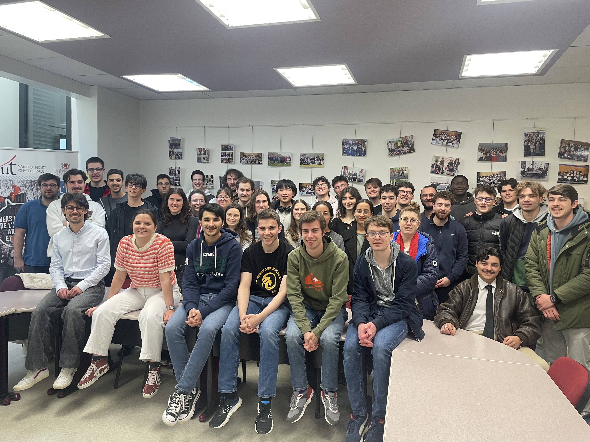
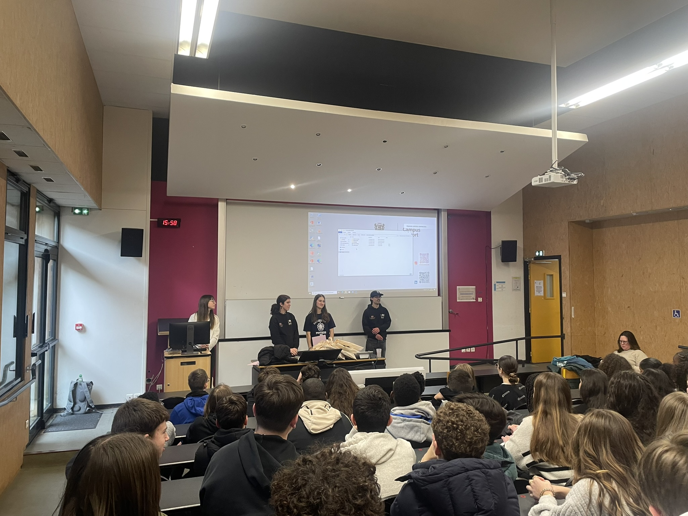
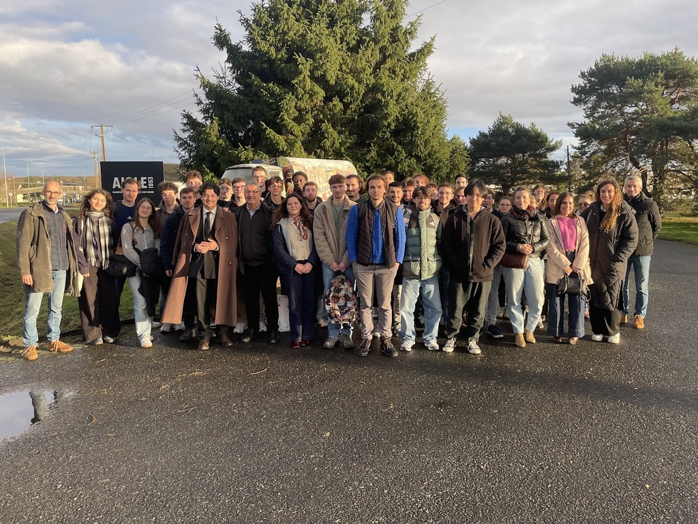

J'ai obtenu le Baccalauréat Général en 2023 avec les spécialités Mathématiques et Histoire Géographie Géopolitique Science Politique. En Première, j'avais en plus la spécialité Physique-Chimie, car je voulais m'orienter en école d'ingénieur. Finalement, je me suis rendu compte que je n'aimais pas cette matière, et j'ai donc décidé de garder les Mathématiques et l'HGGSP en Terminale. Je pense que j'ai fait un bon choix, car l'HGGSP m'a permis d'améliorer ma culture générale ainsi que mes compétences rédactionnelles.
😎 La première année
Je suis arrivé en BUT Science des Données un peu par hasard. À l'époque, j'étais encore indécis sur mon orientation, mais je savais que j’aimais les mathématiques et que l’univers de l’informatique m’attirait. En visitant le campus de Niort de l’IUT de Poitiers, j’ai découvert cette formation qui a immédiatement suscité mon intérêt : elle combinait exactement ce que je recherchais, entre rigueur mathématique et informatique.
Ce fut une vraie révélation. Quand j’ai intégré le BUT, je ne savais même pas me servir d’Excel et je n'avais encore jamais touché à la programmation. J’ai rapidement plongé dans des langages comme Python, R ou encore SAS, que j’ai appris à maîtriser petit à petit.
Depuis, je me suis beaucoup investi. J’ai notamment participé aux Journées Portes Ouvertes, où j’ai présenté notre formation aux futurs étudiants. J’ai également eu l’occasion de retourner dans mon ancien lycée pour partager mon expérience et parler de mon parcours. Ce sont des moments que j’ai appréciés, car ils m’ont permis de prendre du recul sur ma propre évolution.
🤯 La deuxième année
En deuxième année, je me suis spécialisé en Visualisation et Conception d’Outils Décisionnels, une orientation qui correspond parfaitement à mon profil. Mon objectif est de rendre les données accessibles et compréhensibles, grâce à des outils clairs, pertinents et bien conçus. J'ai choisi ce parcours car je préfère l'informatique aux mathématiques.
La deuxième année est la plus difficile du BUT SD. Le troisième semestre est marqué d'une période où les étudiants ont beaucoup de projets à rendre en même temps et beaucoup d'examens à passer. C'est un moment décisif dans cette formation. J'avais très peur de ne pas y arriver et de ne pas avoir le niveau. Les mathématiques sont la partie la partie la plus difficile du BUT, mais cela ne m'a pas découragé. Avec de la force et de la persévérence, on finit toujours par y arriver ! Au final, tout s'est bien passé, et j'ai réussi mon année.
Cette année a été marquée par de nombreux projets divers et variés. J'ai été community manager des réseaux de Science des Données, ce qui m'a permis de développer mes compétences en communication. J'ai aussi participé à un projet qui visait à organiser un Challenge Dataviz entre des lycéens et des collégiens, ce qui m'a appris à rendre la data science ludique et accessible aux jeunes. J'ai également eu l'occasion de travailler sur des projet d'inoformatique décisionnelle, comme la création de tableau de bord web dynamiques.
La deuxième année est aussi marquée par un stage à réaliser en entreprise. J'ai effectué le mien à l'étranger, en Autriche. J'ai eu la chance de pouvoir le faire à la Johanne Kepler Universität à Linz, dans le département des statistiques. C'est une expérience qui m'a permis d'appliquer mes connaissances au service d'un projet universitaire en autonomie. Cela a été l'occasion pour moi de découvrir le machine learning et la bio-statistique, le tout en anglais, ce qui ajoute des cordes à mon arc par rapport à mon profil plutôt orienté vers l'informatique. Ce stage m'a vraiment donné envie de poursuivre mes études après le BUT, car j'ai pu rencontrer des étudiants en Master et en Doctorat, et j'ai été impressionné par leur niveau de compétence et leur passion pour la recherche.
Pour conclure sur cette deuxième année, je dirais que cela a été un défi à relever, mais aussi une période qui m'a permis de mieux définir mon projet professionel futur. J'ai pris goût aux missions effectuées dans le cadre de mon stage, et cela renforce mon envie de poursuivre en Master après le BUT, pour devenir Data-Scientist.
📈 Quel avenir pour moi ? Comment vais-je mener ma troisième année ?
J'ai décidé d'effectuer ma troisième année en alternance. Je vais travailler à Retour de Plage, une entreprise de bijoux artisanaux, en tant qu'assistant en Data-Science. Cette entreprise, située à l'île d'Oléron, va me permettre de mettre en pratique mes compétences en Data-Science dans un contexte réel. Je vais très certainement travailler avec des outils comme VBA et Python. J'espère que cette expérience me permettra de développer mes compétences en Data-Science et de me préparer au mieux pour mon futur métier de Data-Scientist. J'aimerais aussi être ambassadeur de la formation Science des Données, pour continuer à promouvoir cette formation en faisant suite à mon expérience de community manager de deuxièmme année.
👓 Ma vision à long terme
Cette troisième année est aussi une étape vers un Master en Data Science ou Intelligence Artificielle. Mon objectif est clair : devenir Data Scientist dans un environnement dynamique et stimulant, où je pourrai allier rigueur scientifique, créativité et impact concret.